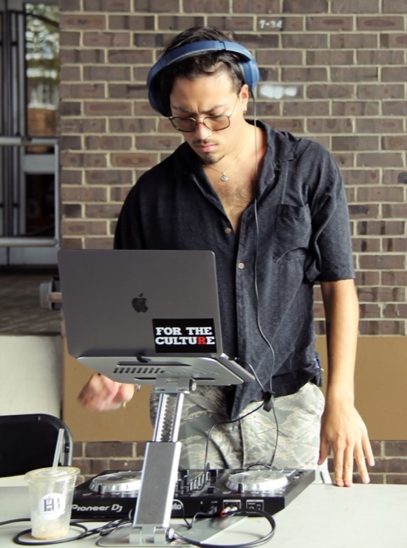

I'm a fifth-year Computer Engineering student at Rutgers University, passionate about building, learning, and creating. My journey has taken me through diverse experiences—from managing social media and exploring backend development in WordPress, to writing code and collaborating across technical teams.
More recently, I’ve ventured into the world of DJing—a fresh chapter where I experiment with sound and explore music as a dynamic outlet for self-expression. Though new to the scene, I'm driven by curiosity and creativity, always eager to try new mediums.
I’d love to connect, collaborate, and share stories—whether it’s about tech, music, or everything in between. Explore the links below to learn more.
Uncover the depths of my story

Daniel Báez
behind my laptop
creative director/ student/ djay
a few moments
drag them around — or tab to one and nudge it with the arrow keys.